1
Click + New Asset
On the Assets page, top right. The New Asset form says Register a customer asset or loaner unit.
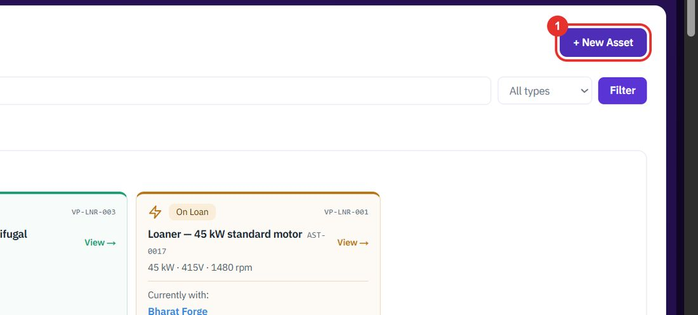
An asset is a piece of customer equipment, or one of your own loaner units. Register it once, then see every case raised against it.
When you take on a new piece of equipment.
On the Assets page, top right. The New Asset form says Register a customer asset or loaner unit.

A name people will recognise, for example Ring-frame drive motor. It is required.
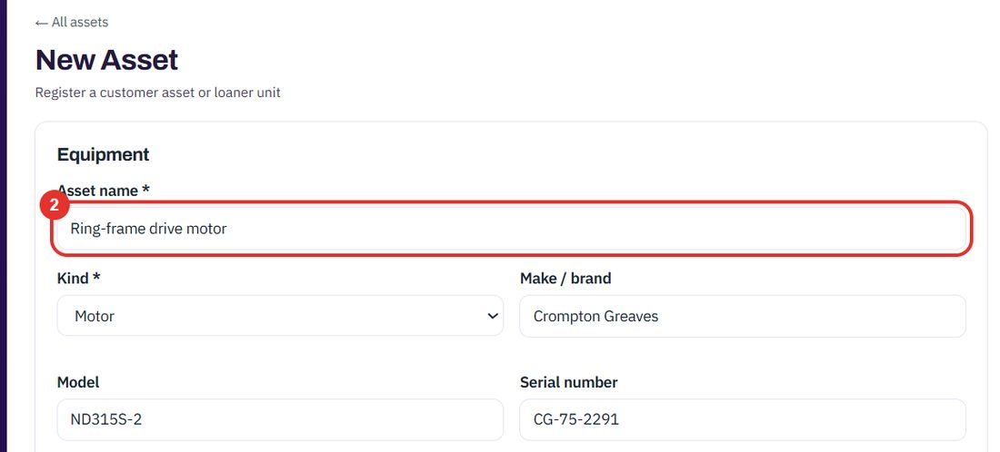
Motor, Transformer, Pump, Generator or Panel / Switchgear.
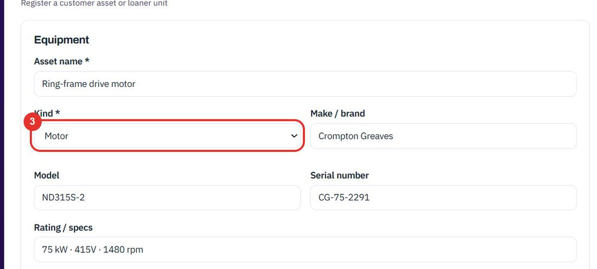
Three fields side by side. The serial number is how you tell two identical motors apart.
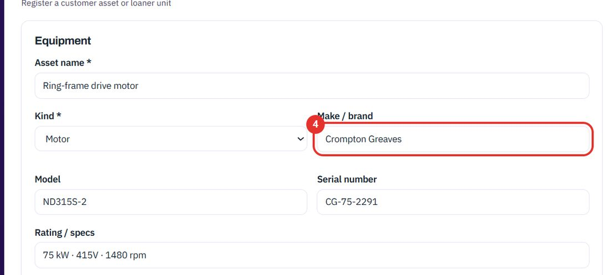
For example 75 kW · 415V · 1480 rpm. Below it, Notes / history is free text.
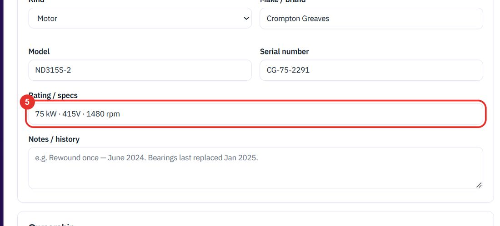
Under Ownership, pick the customer who owns the equipment.
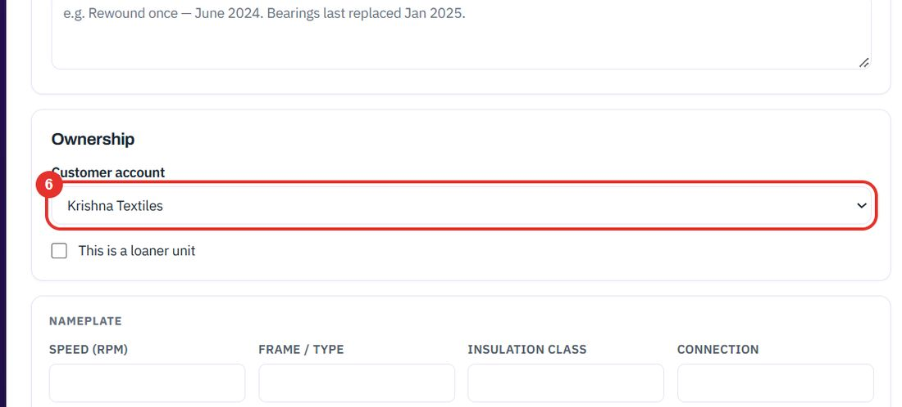
Leave the account empty and tick this box for a unit you lend to customers. Skip it for customer equipment.
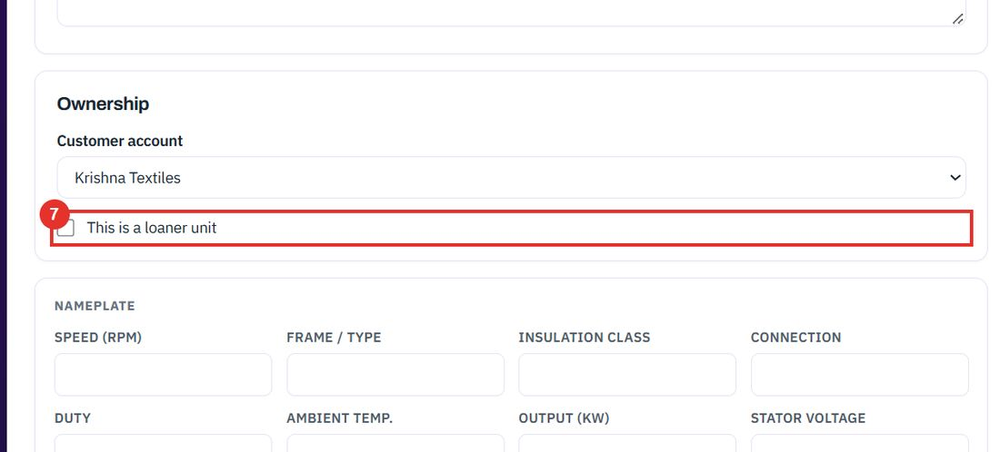
The asset gets an ID such as AST-0013 and appears in the list.
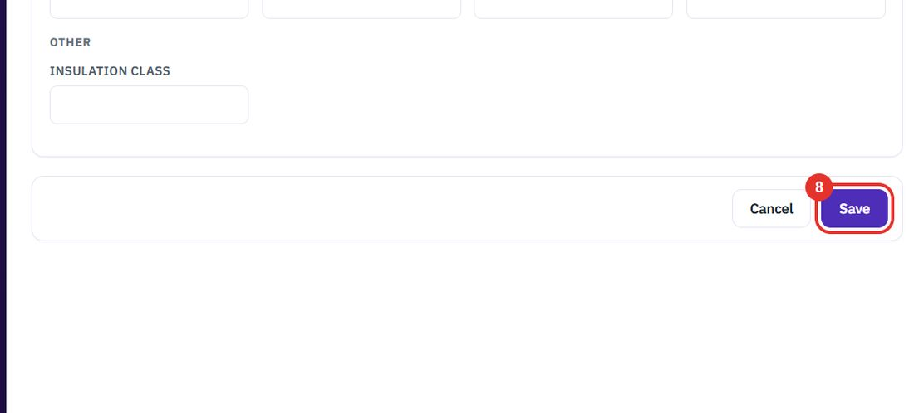
When you need to know what has been done to a machine.
Type a name, make, model, serial number or account in the search box, then click Filter.
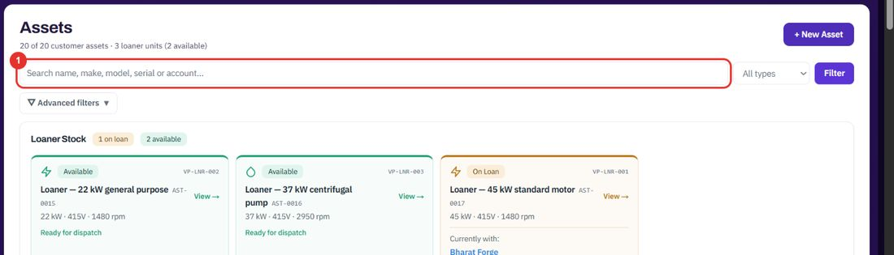
The All types list limits the list to one kind, for example Motor or Pump.
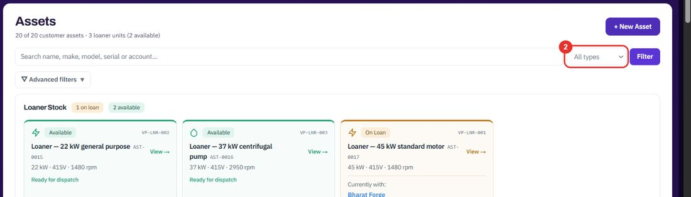
The row shows the asset ID, make and model, serial number, account and how many cases are open.
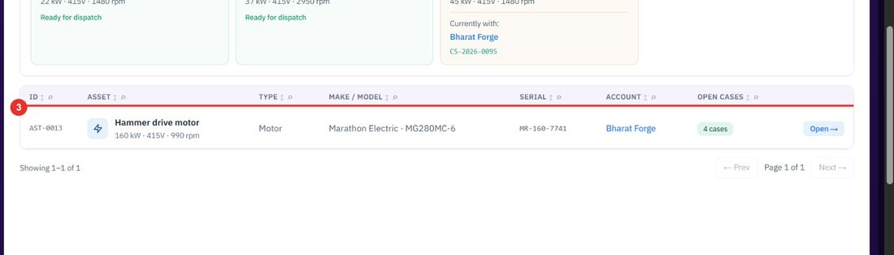
Serial number, rating, account and Service history sit at the top of the asset page. 4 cases · 4 open counts the cases raised against this asset.
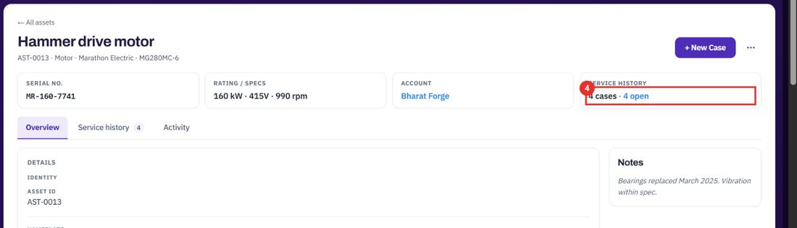
The number on the tab is the number of cases.
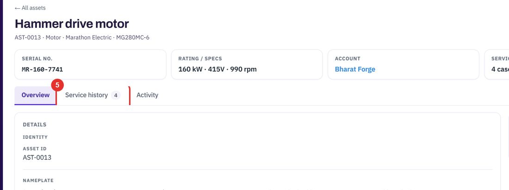
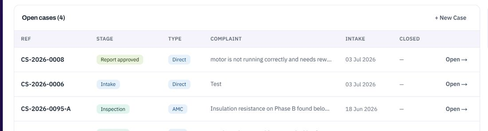
The + New Case button on an asset page starts a case for that machine. See Cases.
Twenty minutes on a live workspace, with your files and your team.